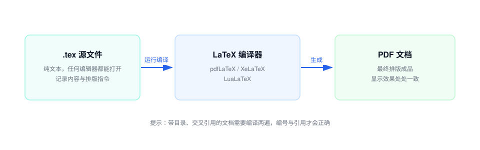
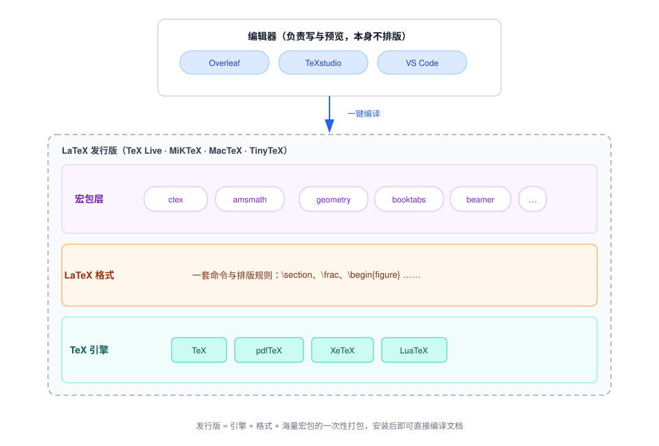
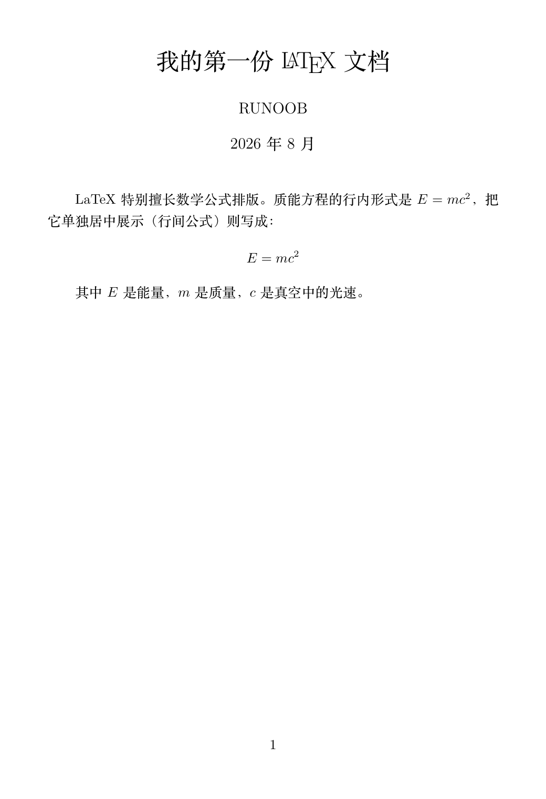

Introduction to LaTeX
LaTeX is a typesetting system based on TeX, widely used to produce high-quality scientific and mathematical documents. It was developed by American computer scientist Leslie Lamport in the 1980s.
TeX is a low-level typesetting engine developed by Donald Knuth, mainly used for handling complex mathematical formulas and high-quality typesetting.
LaTeX provides a higher-level abstraction on top of TeX, allowing users to focus more on content without worrying too much about typesetting details.
Unlike common word processing software (such as Microsoft Word), LaTeX uses plain text files to describe the structure and content of a document, and generates the final PDF file through compilation. LaTeX is particularly suitable for handling complex mathematical formulas, references, cross-references, etc.
LaTeX was originally designed to facilitate the typesetting of academic papers and technical documents, especially in fields such as mathematics, physics, and computer science. Over time, LaTeX has gradually become one of the standard tools in academia and publishing.
LaTeX Features
- High-quality typesetting: LaTeX is known for its professional typesetting effects, especially excellent handling of mathematical formulas. It can automatically adjust document formatting and produce high-quality typesetting that meets publishing standards.
- Markup language based: LaTeX uses a plain-text markup language format. Users define the structure and format of a document by entering specific commands and tags. For example, users use \section{} to define sections, and \textbf{} to bold text.
- Cross-platform support: LaTeX is cross-platform and supports operating systems such as Windows, macOS, and Linux. Output documents are usually in PDF format and display consistently across different platforms.
- Suitable for academic writing: LaTeX is very suitable for writing academic papers, books, technical documents, reports, etc., especially documents containing a large number of mathematical formulas, references, and complex typesetting requirements. It has excellent support for bibliography management, formula input, and typesetting.
- Automated document management: LaTeX provides powerful automation features in long documents, books, or papers, such as automatic numbering, automatic table of contents generation, cross-references, automatic formula typesetting, etc. It can automatically handle citations, reference lists, etc., making it ideal for documents requiring precise formatting.
- Open source and free: LaTeX is open source, and anyone can download and use it for free. Meanwhile, the LaTeX community is very active, providing a large number of templates, packages, and tips to help users improve typesetting efficiency.
How does LaTeX work?
- LaTeX is not like traditional WYSIWYG (What You See Is What You Get) editors. You do not directly see the final typeset result. Instead, you edit a plain text file and input the document's content, structure, and formatting instructions. This file usually has the extension .tex.
- Writing LaTeX source code: First, you use a text editor (such as TeXworks or TeXstudio) to write the LaTeX source file. You specify the document structure, title, paragraphs, formulas, tables, etc., in the file, and use LaTeX commands to specify how to format them.
- Compilation: Then, you compile the .tex file into PDF or other output formats using a LaTeX compiler (such as pdflatex). During compilation, LaTeX automatically generates the table of contents, tables, formula numbering, references, etc.
- Generating the final document: The compiled output is the final document. You can view the PDF version of the result, which will generate high-quality typesetting according to your formatting requirements.
Why use LaTeX?
- Academic writing: If you are a researcher, scholar, or student, LaTeX is ideal for writing academic papers, reports, books, etc., especially documents that require complex mathematical formulas and references.
- High-quality typesetting: LaTeX automatically handles typesetting details and can generate document formats that meet international publication standards. Whether it is fonts, line spacing, margins, or the format of section headings, LaTeX can precisely control them.
- Complex document structure: LaTeX is suitable for handling large documents (such as books, theses, technical manuals). It can automatically generate tables of contents, indexes, and references, and supports cross-references and automatic numbering.
- Mathematical and scientific documents: LaTeX is the preferred tool in fields such as mathematics, physics, and engineering because it can conveniently input and typeset complex mathematical formulas.
Comparison between LaTeX and Word
| Feature | LaTeX | Microsoft Word |
|---|---|---|
| Typesetting quality | Professional-grade typesetting, especially good at handling complex formulas and long documents. | Suitable for simple documents; complex formatting requires manual adjustment. |
| Learning curve | Requires learning basic syntax; difficult for beginners at first. | WYSIWYG (What You See Is What You Get), easy to get started. |
| Degree of automation | Automatically handles numbering, cross-references, table of contents generation, etc. | Requires manual adjustment of numbering and formatting. |
| Mathematical formula support | Powerful mathematical formula typesetting capability, supports complex symbols and structures. | Limited formula editing capability; complex formulas are difficult to handle. |
| Cross-platform support | Fully cross-platform; documents appear consistent across different systems. | Cross-platform support is decent, but formatting may vary depending on the version. |
| Document structure | Content and formatting are separated, making maintenance and collaboration easier. | Content and formatting are mixed; long documents are difficult to maintain. |
| Extensibility | Extends functionality through packages, supports custom commands and environments. | Functionality extension depends on plugins; less flexible. |
The LaTeX workflow can be summarized in three steps: write source code, run compilation, and get the PDF.

The .tex file we write is just an ordinary plain text file that can be opened with any editor. The compiler is responsible for turning it into the final PDF output.
Basic Workflow of LaTeX
The basic process of writing a document with LaTeX is as follows:
- Write the source code: Use a plain text editor to write the .tex file, which contains the document structure, text, and commands.
- Compile the document: Use a LaTeX compiler (such as pdflatex, xelatex) to convert the .tex file to PDF or other formats.
- View the result: The generated PDF file can be viewed directly, and the content will be automatically typeset according to the source code.
For example, a simple LaTeX document is as follows:
Example
\title{My first LaTeX document} % Title
\author{Author} % Author
\date{\today} % Date
\begin{document}
\maketitle % Generate title
\section{Introduction} % Section
This is my first LaTeX document!\\ % Line break
This is a simple paragraph.
\section{Mathematical Formulas}
This is an inline formula:$E = mc^2$。\\ % Inline formula
This is a display formula:
\[
\int_a^b f(x) \, dx
\]
\end{document}
The Core Idea of LaTeX
The core idea of LaTeX is the separation of content and formatting:
- Users only need to focus on the content and structure of the document, and LaTeX will automatically handle the typesetting details.
- Use commands and environments (such as \section, \begin{itemize}) to define the structure and style of the document.
- Formatting adjustments can be made by modifying the document class or loading packages, without directly modifying the content.
Relationship between TeX, LaTeX, Packages, and Distributions
These are the concepts that beginners most often confuse. Once you understand them clearly, you won't get lost when choosing tools or installing environments later.
The entire TeX ecosystem can be divided into four layers, from bottom to top: engine, format, packages, and editors.
The engine is the program that actually does the typesetting work. Common ones include TeX, pdfTeX, XeTeX, and LuaTeX. Among these, XeTeX and LuaTeX natively support Unicode and system fonts, which is why they are recommended for compiling Chinese documents.
A format is a set of command rules built on top of an engine. LaTeX is currently the most popular format.
Packages are plugins that further extend functionality on top of a format, such as Chinese support (ctex), mathematical formula enhancement (amsmath), and page layout (geometry). CTAN hosts more than five thousand packages.
Finally, a collection that bundles the engine, format, and a large number of macro packages together for one-time installation is called a distribution, such as TeX Live and MiKTeX.

Remember five terms in one sentence
Engine: the program that actually typesets source code into PDF, such as XeTeX.
LaTeX format: a set of convenient command rules defined on top of the engine.
Macro package: a functional extension package written by others, such as the Chinese support package ctex.
Distribution: a complete installation package that bundles the engine, format, and macro packages.
Editor: the software you use to write code; it does not participate in typesetting itself.
An editor is not a compiler. Overleaf, TeXstudio, and VS Code are only responsible for writing code and triggering compilation; the actual typesetting is done by the engine in the distribution. So in a local environment, installing only an editor without a distribution will not compile PDFs (Overleaf is an exception; its cloud comes with a full distribution).
Advantages and Use Cases of LaTeX
LaTeX is not a universal tool, but in the following scenarios, its advantages in efficiency and quality are very obvious.
| Scenario | Why it is suitable |
|---|---|
| Academic papers and graduation theses | Most journals and universities provide official LaTeX templates; formulas, figures, tables, and reference numbering are all automatic. |
| Lecture notes in science and engineering such as mathematics and physics | Fast formula input; the typesetting quality of complex formulas (matrices, equation systems, multi-line derivations) far exceeds that of rich text editors. |
| Books and long reports | Automatic chapter management and globally unified styles; documents of hundreds of pages maintain consistent formatting. |
| Resumes | Templates like moderncv produce beautiful typesetting, separate content from style, and editing content does not break the layout. |
| Presentations | Beamer can create academic slides with perfect formula typesetting, which is difficult to achieve with PPT. |
Conversely, there is no need to force LaTeX in these situations: posters requiring heavy graphic design, office documents that need multi-person real-time annotation and circulation, and short documents with few formulas that must be produced the same day; Word or specialized tools are more convenient.
LaTeX's learning curve is steep at first and then flattens out: in the first few days you may feel like 'even changing the font size requires looking up commands,' but if you persist through the basics of this series, you will appreciate the long-term benefits of automated typesetting.
Comparison of Common Distributions
A distribution solves only one problem: it saves you from installing engines and macro packages one by one.
| Distribution | Supported platforms | Size | Features | Target users |
|---|---|---|---|---|
| TeX Live | Windows / macOS / Linux | Full about 8 GB, Basic option about 300 MB | Officially maintained by TUG, one version per year, consistent behavior across the three major platforms. | The first choice for most users |
| MacTeX | macOS | Full about 5 GB, Basic about 100 MB | The macOS version of TeX Live, comes with small GUI tools. | Mac users |
| MiKTeX | Primarily Windows | Basic about 300 MB | Macro packages are automatically downloaded on demand, small initial installation. | Windows users, limited disk space |
| TinyTeX | Windows / macOS / Linux | About 100–200 MB | Minimal distribution, install macro packages on demand via command line. | Users familiar with the command line, servers, and CI environments |
When downloading TeX Live or macro packages from a domestic network environment, it is recommended to switch the software source to domestic mirrors such as Tsinghua University TUNA; the speed can be an order of magnitude faster.
Editor Selection
The editor determines your 'writing' experience; it can be changed at any time and is independent of the distribution.
| Editor | Type | Advantages | Limitations | Who it suits |
|---|---|---|---|---|
| Overleaf | Online | No installation, built-in compilation environment, rich template library, supports collaboration. | Not available offline; the free version has limits on compilation time and number of projects. | Beginners (recommended by this tutorial) |
| TeXstudio | Local desktop | Free and open source, strong command completion and error prompts. | Interface is somewhat traditional | Users who prefer local writing |
| VS Code + LaTeX Workshop | Local plugin | Modern interface, Git-friendly, integrated compilation and preview. | Requires some configuration | Developers already using VS Code |
| TeXworks | Local desktop | Comes with TeX Live, works out of the box. | Fewer features | For quickly writing short documents |
It is recommended to start with Overleaf firsthttps://www.overleaf.com/, with zero configuration you can directly follow the tutorial and type code; when you need offline writing or version control later, set up a local environment.
Sneak Peek: A Complete LaTeX Source Code
Before formally setting up the environment, let's take a look at what a real LaTeX document looks like.
The following source code is complete and compilable, containing Chinese text, a title, and two mathematical formulas.
Example
\documentclass{ctexart}
\title{My first\LaTeX{} document} % Document title
\author{RUNOOB} % Author
\date{August 2026} % Date; writing \today will automatically fill in the current day
\begin{document} % The body starts here
\maketitle % Generate the title area
LaTeX is especially good at typesetting mathematical formulas. The inline form of the mass-energy equation is$E = mc^2$，
To display it separately centered (display formula), write:
\[ E = mc^2 \]
where$E$is energy,$m$is mass,$c$is the speed of light in vacuum.
\end{document} % The body ends here
After compiling this source code, the resulting PDF page is as follows:

It is completely normal not to understand these commands now; every subsequent article in this series will explain them one by one.
Here you only need to remember two structures: the part from \documentclass to \begin{document} is calledpreamble, used for global settings; the part between \begin{document} and \end{document} is calledbody area, which is where you write the content.
Click to share notes
<p style="font-size:14px;">Notes must be an expansion of this article's content!</p><br> <p style="font-size:12px;"><a href="../tougao.html" target="_blank">Article submission, click here</a></p> <p style="font-size:14px;"><a href="../w3cnote/runoob-user-test-intro.html" target="_blank">How to get a registration invite code</a></p> <h3 class="text-muted"><i class="fa fa-info-circle" aria-hidden="true"></i> You must <a href=";.html" class="runoob-pop">log in</a> before sharing notes!</h3> <p><a href="../w3cnote/runoob-user-test-intro.html" target="_blank">How to get a registration invite code</a></p>